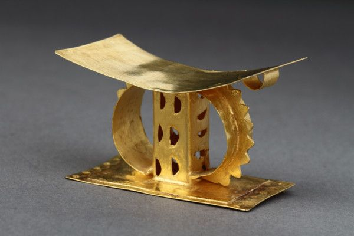
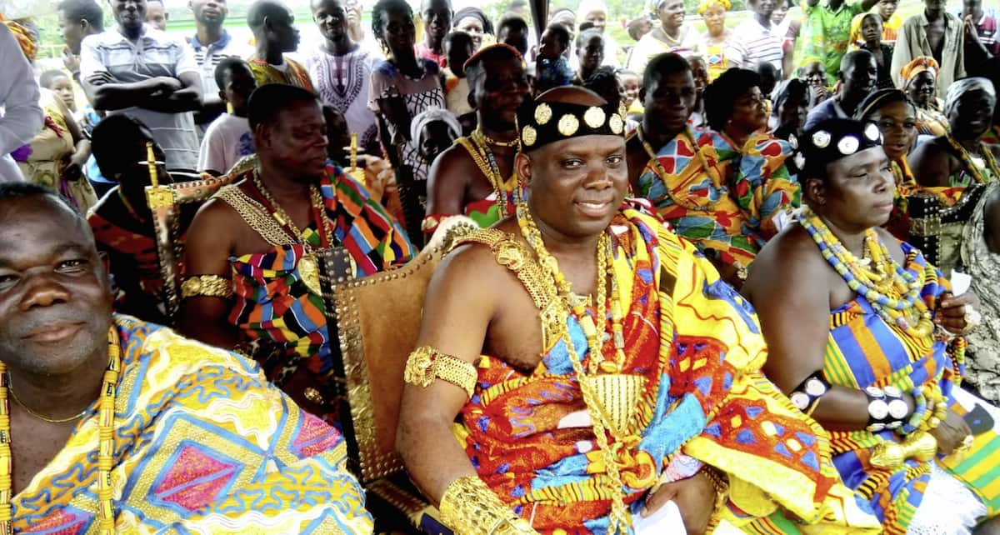
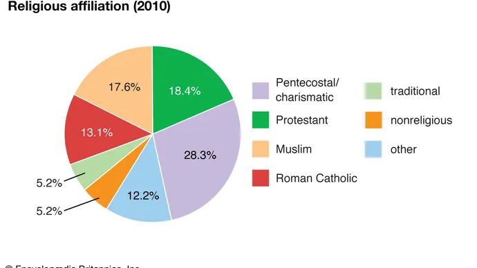
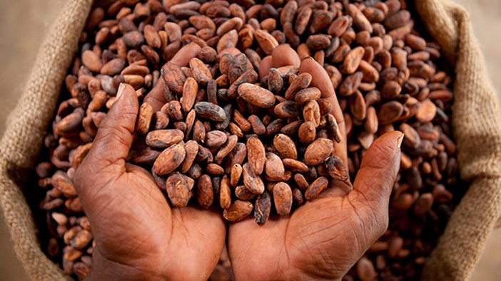

History of Ghana
Early History

Between the 9th and 11th centuries C.E., the kingdom of Ghana was so rich that its dogs wore golden collars, and its horses, which were adorned with silken rope halters, slept on plush carpets. Based on animal luxuries alone, it is no wonder that foreigners touted Ghana's kings as the richest men in the world. Certainly they were living the high life ... but how did they do it? Located within the present-day borders of Mauritania, Mali, and Senegal, medieval Ghana literally sat on a gold mine. The land's abundance of resources allowed Ghana's rulers to engage in years of prosperous trading. Strategic governing coupled with great location led to the rapid emergence of a very wealthy empire.
Gold in Wagadugu
Most of what we know about ancient Ghana (which is more accurately called Wagadugu) is based on writings of Arab travelers who came in contact with the nation's peoples. "Ghana" was actually the title given to Wagadugu kings and was used by the Islamic "reporters" to describe the rich and mysterious place they observed. Evidence of Ghana's occupation dates back to the 4th century, but it was several hundred years later that it became established as a nation by a tribe known as the Soninke, whose leaders have been credited with the early strengthening of the Wagadugu state and the expansion of its territories. By 1000 B.C.E., the nation had undergone strategic expansion and taken control of a large pocket of land between the upper Niger and Senegal Rivers. The region was rich in gold, and its acquisition meant that Ghana would become a leading force in the trans-Saharan trade network.
Early Ghanian Politics
The leader of all leaders was the king, who was also known as the ghana, or war chief. His word was law. He served as the commander in chief of a highly organized army, the controller of all trade activities, and the head administrator of justice. Mayors, civil servants, counselors, and ministers were appointed by the king to assist with administrative duties — but at all times, the king was in charge. Each day, the king assembled his court and allowed people to publicly voice their complaints. Beating drums that resounded throughout the area signaled the courts assemblage and people gathered to speak their minds. Whether they were neighborly conflicts, or cases of violated rights, the king listened to the complaints and gave his judgment.
Trans-Saharan Trade
When the king was not busy enforcing his power among the people, he was spreading it internationally through trade. At its peak, Ghana was chiefly bartering gold, ivory, and slaves for salt from Arabs and horses, cloth, swords, and books from North Africans and Europeans.
As salt was worth its weight in gold, and gold was so abundant in the kingdom, Ghana achieved much of its wealth through trade with the Arabs. Islamic merchants traveled over two months through the desert to reach Ghana and "do business." They were taxed for both what they brought in and what they took out. With this system, it is no wonder that Ghana got rich quickly.
The wealth that the kingdom acquired did not, however, serve in its favor forever. Competition from other states in the gold trade eventually took its toll.
Jealousy, fear, and anger of Ghana's power prompted its neighbors to stand up against the kingdom. Their efforts were at first weak and insignificant, but eventually, in the mid-11th century, a Muslim group known as the Almoravids launched a devastating invasion on the capital city of Koumbi Saleh. Though territories were seized, and a tribute tax was enforced, Ghana recovered and forced the invaders to withdraw.
A little less than 200 years later, however, Ghana was not so lucky. Weakened by subsequent attacks, and cut-off from international trade, the kingdom was vulnerable and unable to prevent defeat. In 1240 C.E., Ghana was absorbed into the growing nation of Mali, which would soon become the next great empire.
Independence Day

The Independence Day of Ghana is a national holiday celebrated yearly. This day is an official state holiday for the citizens of Ghana both within and in the diaspora to honour and celebrate the Heroes of Ghana who led the country to attain its independence. The Independence Day is celebrated on March 6 every year. Independence Day is also remembrance of the day that marks the declaration of Ghanaian independence from the British colonial rule. The first Prime Minister of Ghana; Kwame Nkrumah became the Head of Government from 1957 to 1960. On March 6, 1957 Kwame Nkrumah declared to the people of Ghana about their freedom, he added that, "the African People are capable of managing their own affairs and Ghana our beloved country is free forever."
Pioneers

Ghana was the first country in sub-Saharan Africa to achieve its independence from European colonial rule.Many Ghanaian who have had the chance to lead the country as Presidents have commemorated the occasion of Ghana Independence Day and have declared the day a public holiday for a celebration. Granting the day as a national holiday is well recognized such that, if 6 March of a year fell on a weekend of the Independence Day celebration,the working day that follows which is a Monday will be granted and observed as a holiday by the whole nation.Many Presidents from other African countries and Europe have been invited to Ghana to join in the celebration either as Guest Speakers or Invited Guests since the reign of former President Kwame Nkrumah till now.
Background
Ghana formerly known as the Gold Coast had many natural resources categorized into two as minerals and forest resources.The mineral resources are gold and ivory, bauxite, diamond, and manganese, which enticed the Europeans.There are also food and cash crops.Many controversies arose among the European countries as to who should take charge of the Gold Coast due to its rich natural resources.
In 1874, the British took control over parts of Gold coast although the Portuguese were the first to settle at Elmina in the Gold Coast in 1482.After the British control, Gold Coast was named the British Gold Coast.After the World War II, the British reduced its control over its colonies in Africa including the Gold Coast.The United Gold Coast convention pioneered the call for independence within the shortest possible time after the Gold Coast legislative election in 1947.Osagyefo Dr. Kwame Nkrumah was elected the leader of the Gold Coast government in 1952 after he won the Gold Coast legislative election in 1951.Led by the big six, the Gold Coast declared its independence from the British on 6 March 1957.The Gold Coast was named Ghana.
Ethnic and linguistic groups

Ethnically, the people of Ghana may be said to belong to one broad group within the African family, but there is a large variety of subgroups. On the basis of language, it is possible to distinguish at least 75 of these. Many of these are very small, and only 10 of them are numerically significant. The largest of these groups are the Akan(which includes the Anyi, Asante [Ashanti], Baule, Fante, and Guang), Mole-Dagbani (see Dagomba), Ewe, Ga-Adangme (see Ga and Adangme), and Gurma. Despite the variety, there were no serious ethnic dissensions when Ghana became independent. Ethnic consciousness persists in many areas, however, and at times tensions have erupted—especially in northern Ghana—into violent clashes with many fatalities. At all levels in government and in public life, an effort has been made to play down ethnic differences, a policy that has been helped by the adoption of English as the official language.
Religion

More than one-half of the population is Christian, about one-fifth is Muslim, and a small segment adheres to the traditional indigenous religions. Indigenous religions, while widespread and deep-rooted, lack a systematic body of doctrines. Though they are based, in general, on belief in the existence of a supreme being, a number of lesser deities associated with various natural phenomena are recognized. Considerable prominence is given to dead ancestors, who are considered to be ever-present, capable of influencing the course of events for the living and capable of serving as intermediaries between the living and the gods.
Settlement Patterns
Ghana has three major geographic regions—coastal, forest, and northern savanna—the boundaries of which are not always clearly defined.
By far the smallest of the regions, the coastal zone is traditionally a region of fishermen and small-scale farmers. This region was formerly occupied by a series of small kingdoms, the inhabitants of which were the first people from what would become Ghana to be exposed to European contact—from the 15th century onward, perhaps even earlier. From east to west the principal ethnic groups are the Ewe, Adangme (Adangbe), Ga, Efutu, Fante, Ahanta, and Nzima. The seaboard has made the region an important hub of commerce, resulting in the growth of such urban centres as Accra, Cape Coast, and Sekondi-Takoradi. The coastal zone has more urban centres than any other region in Ghana.

Farther inland, occupying about one-third of the country, is the forest region with its relatively large and prosperous traditional states and rich agricultural lands. West of the Volta these states consist mostly of Akan peoples; to the east the Ewe predominate. The forest environment and the economic activities and modes of life engendered by it, especially since the introduction of the farming of cacao source of cocoa beans in 1879, have served to give the region a common stamp. Apart from the Ewe, the major ethnic groups are the Akwapim and Kwahu in the east, the Akim in the south, the Asante and Brong in the centre and north, and the Wasaw and Sefwi in the west. While all the peoples in the region have a relatively long history of settlement and political activity, those with the most impressive record are the Asante, who from the 17th to the late 19th century built a political empire centred on Kumasi that included a large number of subject and satellite states spread throughout the forest region and in both the coastal and northern savanna zones.

Almost all the timber, cacao, and exploited mineral wealth, as well as a number of minor cash crops grown for export and a large part of the foodstuffs consumed in Ghana, come from the forest region. Population density is relatively high, especially in the cacao-growing areas. Except for Kumasi, there are few really large urban centres, although other administrative centres—Ho, Koforidua, and Sunyani—form significant population concentrations.